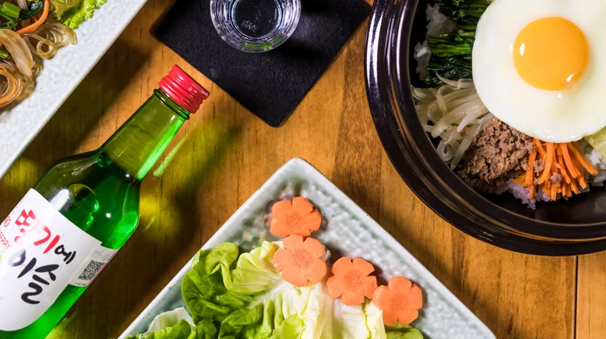

종가 내림음식 프라이빗 다이닝 예약, 3단계로 끝내는 법
사진: Thành Văn Đình / Pexels (무료 이미지, 출처 표기)
종가 내림음식 프라이빗 다이닝의 특별함

종가 내림음식은 한 가문의 종부(宗婦, 종가의 맏며느리)를 통해 대대로 전해 내려온 독창적인 조리법과 가문의 역사적 서사가 담긴 귀한 음식입니다. 수십 년 동안 묵혀온 씨간장과 천연 조미료를 사용해 깊은 맛을 내는 것이 특징입니다. 최근에는 이러한 전통 요리를 현대적인 프라이빗 다이닝(소수 인원을 위한 맞춤형 식사 서비스) 형태로 복원하여 운영하는 곳이 늘고 있습니다. 하루에 단 한 팀만 받거나 주말에만 제한적으로 운영하기 때문에 예약이 매우 까다롭지만, 그만큼 가치 있는 미식 경험을 선사합니다.
실패 없는 종가 다이닝 예약 3단계 절차
종가 내림음식 다이닝은 일반 식당처럼 포털 사이트 간편 예약이 어려운 경우가 많습니다. 다음의 3단계 과정을 거치면 차근차근 예약에 성공할 수 있습니다. 2026년 현재 운영 상황은 각 종가별 공식 채널을 통해 수시로 변동되므로 사전 확인이 필수입니다.
- 공식 운영 채널 및 예약 플랫폼 확인: 농촌진흥청이나 지역 문화재단에서 연계하여 운영하는 공식 예약 페이지를 방문하거나, 종가에서 직접 운영하는 소셜 미디어(SNS) 계정을 통해 예약 가능 일정을 확인합니다.
- 인원 구성 및 메뉴 상담: 종가 다이닝은 대개 최소 4인에서 최대 8~10인 사이의 소규모 단독 대관 형태로 진행됩니다. 방문 인원을 확정하고 가문 고유의 내림음식 중 선호하는 코스를 상담합니다.
- 예약금 입금 및 최종 확정: 식재료 수급과 사전 준비 기간이 길기 때문에 식사 비용의 50%에서 전액을 예약금으로 선입금하는 경우가 대부분입니다. 입금 완료 후 확정 안내 문자를 받으면 예약이 완료됩니다.
대표적인 종가 내림음식 다이닝 프로그램 비교
우리나라 각 지역의 대표적인 종가 중, 프라이빗 다이닝 체험 프로그램을 운영하는 곳들의 특징을 비교해 정리했습니다. 운영 방식이나 메뉴는 계절 및 종가 사정에 따라 달라질 수 있으므로 방문 전 유선 확인을 권장합니다.
상기 비교표에 제시된 정보는 운영 주체의 사정에 따라 변동될 수 있습니다. 특히 가양주(집에서 빚는 술) 제공 여부나 구체적인 메뉴 구성은 예약 상담 시 한 번 더 확인하는 것이 좋습니다.
예약 및 방문 시 반드시 확인해야 할 주의사항
종가 다이닝은 일반 상업 식당과 달리 개인의 삶의 공간이기도 한 종택에서 진행되는 경우가 많습니다. 따라서 방문 전에 아래 주의사항을 반드시 숙지해야 서로 간의 예의를 지킬 수 있습니다.
- 엄격한 환불 규정: 1~2주일 전부터 직접 장을 보고 식재료를 숙성하기 때문에, 방문 3~5일 전 취소 시 예약금 환불이 불가능할 수 있습니다. 일정 변경은 최소 일주일 전에 요청하는 것이 에티켓입니다.
- 알레르기 정보 사전 공유: 전통 간장, 된장, 초 등을 기본 양념으로 사용하므로 콩, 밀, 특정 견과류나 육류 알레르기가 있다면 예약 단계에서 명확히 전달해야 대체 메뉴를 조율할 수 있습니다.
- 공간에 대한 존중: 종택은 보존 가치가 높은 문화재인 경우가 많습니다. 실내 문화재 보호를 위해 지나치게 화려한 액세서리나 구두 착용 시 주의가 필요하며, 지정된 구역 외의 출입은 자제해야 합니다.
자주 묻는 질문(FAQ)
Q. 채식주의자(비건)를 위한 메뉴 구성도 가능한가요?
A. 일부 종가에서는 사전 요청 시 사찰 음식 스타일의 완전 채식 코스로 구성을 변경해 주기도 합니다. 다만, 가문 고유의 전통 육류/어류 내림음식이 메인인 경우가 많으므로 반드시 예약 시점에 조율이 필요합니다.
Q. 어린아이를 동반해도 괜찮을까요?
A. 조용한 전통 한옥 공간에서 장시간 식사가 이어지기 때문에 일부 종가에서는 '노키즈존'으로 운영하거나 보호자의 특별한 지도를 요청합니다. 가족 단위 방문 시 아동 동반 가능 여부를 먼저 문의하시는 것이 좋습니다.
🔗 이 글도 함께 보면 좋아요: 한방 족욕·입욕 센터 고르는 법, 실패 없는 4가지 체크리스트